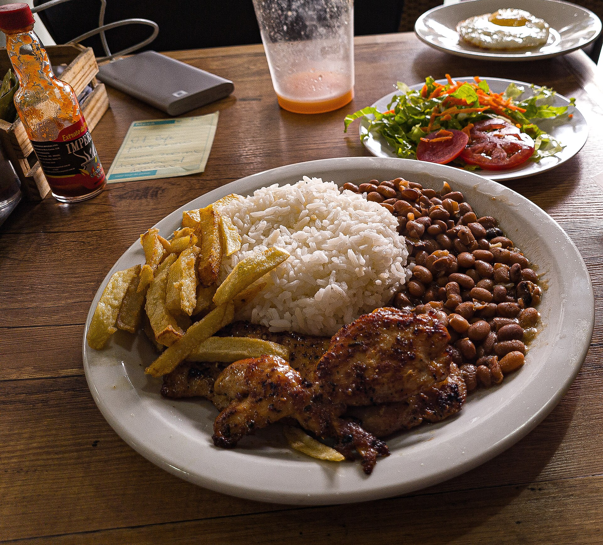

R$ 29,00
Prato do dia
Prato Feito da Bisa
Arroz soltinho, feijão feito na hora, carne ou frango grelhado, salada, farofa e ovo.
Almoço e jantar feitos no dia, do jeitinho que se faz em casa. Você pede pelo WhatsApp e recebe quentinho — sem app e sem taxa de entrega extra.
Prato servido com mão cheia, tempero na medida e aquele acompanhamento que não cabe no prato. Veja o mais pedido de quem já provou.

R$ 29,00Arroz soltinho, feijão feito na hora, carne ou frango grelhado, salada, farofa e ovo.
 R$ 39,00
R$ 39,00
Feijão preto encorpado com carnes selecionadas, acompanhada de arroz, couve, farofa e laranja.
 R$ 34,00
R$ 34,00
Arroz com carne de sol desfiada, tempero da casa e cheiro-verde. Aquele prato que aquece a alma.
 R$ 36,00
R$ 36,00
Frango dourado e suculento assado com legumes, servido com os acompanhamentos do dia.
Pratos, fotos e valores de exemplo — o menu muda todo dia. Chame no WhatsApp e eu te mando o que saiu hoje.
Ver o cardápio de hoje
A Bisa Comida Caseira existe pra matar a saudade de comida boa. Nada de industrializado: aqui tudo é temperado e preparado no dia, do jeitinho que se faz em casa.
Estamos no Cais do Porto, em Fortaleza, atendendo no almoço e no jantar. É só sentar à mesa ou pedir pra levar.
A nota que você vê aqui é a mesma do Google Maps — e quem já foi, volta.
★★★★★“Comida gostosa, tempero na medida e atendimento simpático.”
Cliente no Google
★★★★★“Parece comida da minha mãe. Já virei freguês.”
Cliente no Google
★★★★★“Melhor almoço da região, sem exagero.”
Cliente no Google
Depoimentos de exemplo — substituí-los pelos comentários reais do perfil do Google.
Manda um zap que a gente já separa o seu pedido.